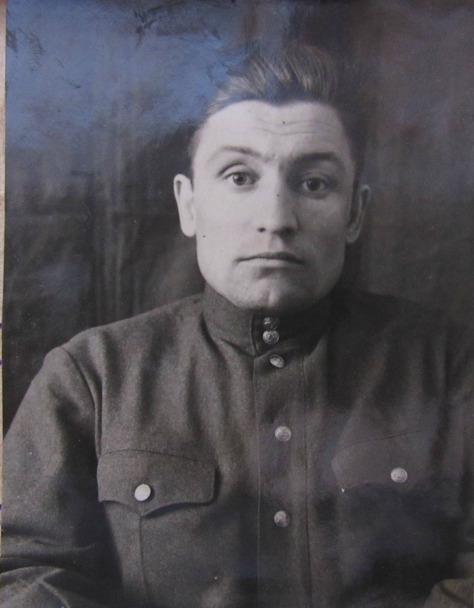
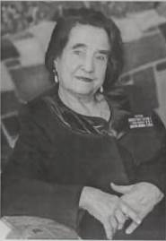
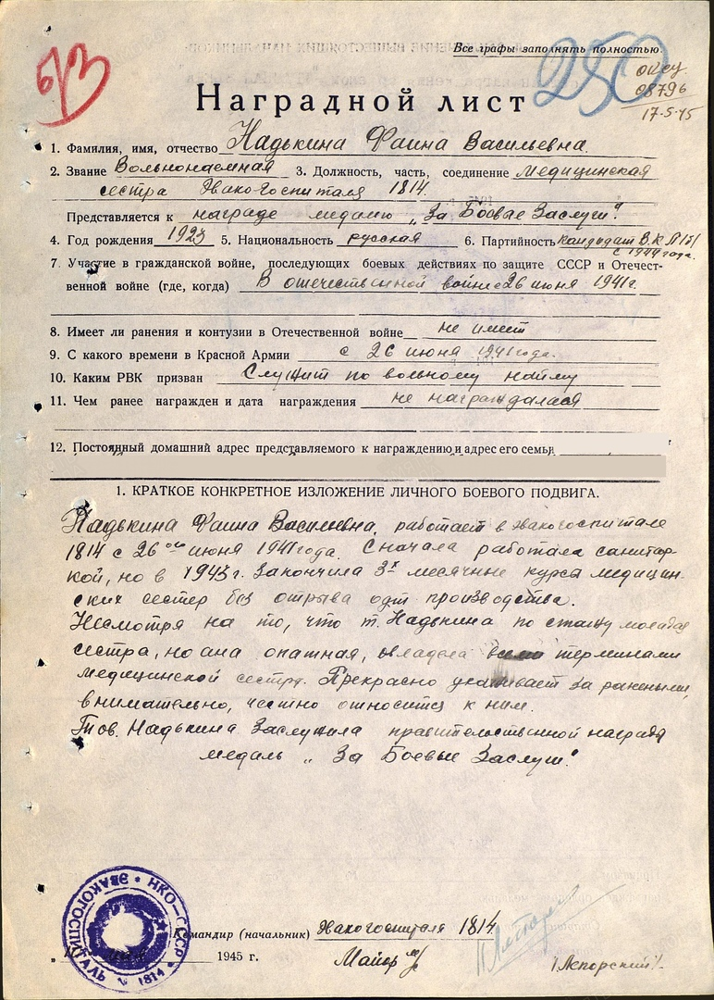

БРЮХАЧЁВ ФЁДОР ИВАНОВИЧ (1913 г. р.)
Родился в 1913 году в городе Царицыне (ныне - Волгоград) в семье рабочего. Отец Федора всю трудовую жизнь проработал по найму на разных заводах в Сталинграде. Мать была домохозяйкой.
Фёдор в 1928 году окончил 7 классов школы. Пошёл по стопам отца, устроившись ящичником на лесозавод «Пильщик». Затем Фёдор Брюхачёв работал бригадиром-каменщиком на стройках родного города. В 1929 году вступил в комсомол. С 1932 года стал членом ВКП(б).
В 1932 году он по комсомольскому набору был направлен на Тракторный завод, где работал браковщиком металла и одновременно учился в Индустриальном институте на рабочем факультете. В 1933 году поступил в Московский юридический институт. Отсюда его призвали на службу в ряды РККА. В 1937 году демобилизовался, вернулся в Сталинград. Работал до ноября 1938 года преподавателем истории в средней школе № 27. Одновременно с отличием окончил Всесоюзный юридический заочный институт в городе Москве, получив квалификацию юриста.
В декабре 1938 года его назначили заместителем директора по учебной части и преподавателем гражданского права Горьковской юридической школы. С октября 1940 до ноября 1941 года Фёдор Иванович работал заведующим юридической консультации адвокатов. В 1941 году без отрыва от производства окончил аспирантуру по курсу гражданское право при Правовой академии в Москве.
В годы Великой Отечественной войны Брюхачёв Ф. И. был мобилизован на фронт. Служил с 1942 по март 1946 года сначала на политработе, а с сентября 1943 года в органах СМЕРШ на оперативно-следственной работе.
После окончания войны приехал в Прокопьевск, где заведовал юридической консультацией города, работал в Прокопьевском горном техникуме. Брюхачев Ф. И. являлся членом Кемеровской коллегии адвокатов.
БОРЗЫХ ИВАН ПЕТРОВИЧ (1918 г. р.)

Родился в 1918 году в селе Гололобовка Козловского уезда Тамбовской губернии в крестьянской семье. Окончил семь классов школы. 1 сентября 1936 года поступил в Сталинское педагогическое училище, которое окончил 21 июня 1939 года. В августе этого же года выпускника Ивана Борзых направили на работу в Зенковскую среднюю школу. Всего через месяц его перенаправили в Кыргайскую среднюю школу в качестве преподавателя физики и математики и заведующего учебной частью.
В июне 1939 года Иван Петрович получил повестку военкомата, но был оставлен в Прокопьевске до особого распоряжения. В августе 1940 года он поступил на работу в Прокопьевский городской отдел народного образования на должность преподавателя математики в среднюю школу № 14.
В октябре 1940 года Иван отправился на службу в Красную Армию. За годы службы командир роты Борзых дослужился до звания старший лейтенант.
С 9 августа по 3 сентября 1945 года Иван Петрович участвовал в войне с японскими милитаристами. После окончания Второй Мировой войны служил в Северной Корее. В 1947 году Борзых И. П. был уволен в запас.
Иван Петрович возвратился в Прокопьевск, где с февраля 1948 года работал в горном техникуме в должности военного руководителя.
Боевые награды: «Медаль за победу над Японией».
БОЙКО МАКСИМ МИХАЙЛОВИЧ (1898 г. р.)
Родился 5 сентября 1898 года в Акмолинской области (ныне Омская область) в семье крестьянина-середняка. Работал в колхозе плотником.
В 1931 году был завербован на работу в город Прокопьевск. С 1932 по 1933 годы Бойко М. М. работал председателем поселкового комитета. С января 1933 по январь 1935 года работал в должности коменданта коммунального отдела строительной конторы. В 1935 году, уволившись по собственному желанию, Максим Бойко устроился комендантом в Прокопьевский горный техникум. Здесь же с июля 1941 по февраль 1942 года работал в должности помощника директора по хозяйственной части.
На фронт Великой Отечественной войны Бойко М. М. был призван в феврале 1942 года. Получил тяжёлое ранение. После лечения в госпитале был комиссован.
16 января 1943 года городской комитет ВКП(б) города Прокопьевска направил инвалида войны Бойко Максима Михайловича на работу в горный техникум. Здесь с 1945 года он работал директором подсобного хозяйства техникума, затем комендантом учебного корпуса.
Боевые награды: медали «За боевые заслуги» (07.05.1970 г.),«За победу над Германией в Великой Отечественной войне 1941-1945 гг.» (09.05.1945 г.).
ПРОТАСЕНКО ЕВГЕНИЯ ФЁДОРОВНА (1924 г. р.)
Родилась в 1924 году в посёлке Корма Гомельской губернии РСФСР (ныне городской посёлок Корма Гомельской области Белоруссии). До войны проживала на Кавказе в городе Грозный.
Летом 1941 года после окончания школы Женя приехала в посёлок Корму к родителям, отдохнуть и подготовиться к поступлению в институт на химический факультет. А через три дня началась война. Уже 15 августа 1941 года Корма была оккупирована подразделениями вермахта. Территория посёлка была включена в тыловую область группы армий «Центр».
С первых дней оккупации развернулось партизанское движение. Отца Евгении, Фёдора Кузьмича Протасенко, оставили в посёлке и поручили организовать подпольную базу для снабжения партизан. Евгения взялась помогать отцу, но вскоре была разоблачена немецкой полицией.
Ей удалось уйти от карателей и укрыться в лесу в партизанском отряде. Евгения стала связной 260-го партизанского отряда (командиры - Гаврилов И. М., Грызлов М. Г.), который входил в состав Рогачевской военно-оперативной группы.
В партизанском отряде Евгения Фёдоровна встретила своего будущего супруга Дудалева Сергея Семёновича. После войны супружеская пара проживала в г. Прокопьевске. Евгения Фёдоровна работала учительницей русского языка и литературы в школе № 1.
СМЕТЮК (НАДЬКИНА) ФАИНА ВАСИЛЬЕВНА (1923 г. р.)

Родилась в селе Ново-Тавла Пензенской губернии. В 1932 году семья Надькиных приехала в Прокопьевск, поселились на Голубевке. Отец Фаины сначала работал на строительстве шахты «Коксовая», затем там же подземным электрослесарем. Фаина училась в школе № 8. С энтузиазмом посещала спортивные кружки «Будь готов к труду и обороне», «Готов к труду и обороне», клуб «Ворошиловский стрелок». Окончила курсы медицинских сестер Российского Общества Красного Креста.
Когда началась война, Фаина с подругой Катей, прибавив себе лет, устроились вольнонаемными в один из госпиталей в Прокопьевске. Но через два месяца начальство, узнав о настоящем возрасте молоденьких сестричек, выгнали 16-летних девчонок из госпиталя. Это происшествие не поколебало твердой уверенности девушек попасть на фронт.

В октябре 1941 года из Прокопьевска на фронт ехал эвакогоспиталь № 1814, эвакуированный из Донецка. Врачи Волынова Ревека Израилевна и Цвыбак Раиса Наумовна взяли Фаину с подругой на работу в госпиталь. В составе ЭГ 1814 Фаина Васильевна прошла боевой путь от Москвы до Берлина, спасая раненых в общей сложности 4 года 5 месяцев и 24 дня. Сначала Фаина работала санитаркой, затем окончила трехмесячные курсы медицинских сестер без отрыва от основной деятельности. Медицинские сестры выезжали на передовую собирать раненых, привозили в госпиталь, выгружали, оказывали первую помощь, легкораненых оставляли на долечивание, а тяжелых отправляли в глубокий тыл.
За самоотверженность по спасению раненых в годы Великой Отечественной войны награждена медалью «За боевые заслуги».
День победы Фаина Васильевна встретила в Бромберге (Германия). Затем ещё полгода в Берлине медработники продолжали лечить советских солдат. Фаина Надькина вернулась домой в декабре 1945 года. После войны работала в Прокопьевске.
Боевые награды: медали «За боевые заслуги» (23.07.1945).
Назад